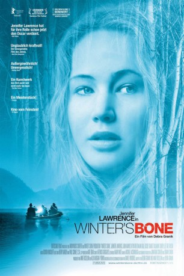

#7082 Winter's Bone
Auszeichnungen: für 4 Oscars nominiert
 
 IMDB-Wertung: 7.2 / 10
IMDB-Wertung: 7.2 / 10  Tomatometer: 94
Tomatometer: 94  Metascore: 0
Metascore: 0 
Verzweifelt sucht die siebzehnjährige Ree ihren Vater, der untergetaucht ist und das Haus der Familie samt Grundstück verpfändet hat. Wenn sie ihn nicht auftreiben kann, wird sie mit ihren kleinen Geschwistern und der kranken Mutter auf der Straße stehen. In den Wäldern der Ozark Mountains spielt dieser Film. In einer Welt, die aus der Welt gefallen zu sein scheint. In heruntergekommenen Blockhäusern haben sich die Menschen notdürftig eingerichtet. Unbehauste Gestalten, die quasi von der Hand in den Mund leben. Bei ihren Nachbarn findet Ree kaum Unterstützung, als sie nach ihrem Vater sucht, überall stößt sie auf eine eiserne Wand des Schweigens.
Jahr: 2010
Dauer: 99 Minuten
FSK: 12
Land: USA Studio: Roadside AttractionsTonspuren: DTS - ,
Untertitel: Deutsch,
Auflösung: 1080p (1920x1040) Größe: 9318 MB
Genre: Drama
Regisseur: Debra Granik
Drehbuch: Debra Granik
Soundtrack:
Darsteller:
 Jennifer Lawrence als Ree
Jennifer Lawrence als Ree- Isaiah Stone als Sonny
- Shelley Waggener als Sonya
 Garret Dillahunt als Sheriff Baskin
Garret Dillahunt als Sheriff Baskin- Lauren Sweetser als Gail
 John Hawkes als Teardrop
John Hawkes als Teardrop- Kevin Breznahan als Little Arthur
 Dale Dickey als Merab
Dale Dickey als Merab Sheryl Lee als April
Sheryl Lee als April- Tate Taylor als Mike Satterfield
- Debbie Sutcliffe als Bar Patron , uncredited
- Ashlee Thompson als Ashlee
- Valerie Richards als Connie
- William White als Blond Milton
- Ramona Blair als Parenting Teacher
- Andrew Burnley als Baby Ned
- Phillip Burnley als Baby Ned
- Isaac Skidmore als Baby Ned
- Cody Brown als Floyd
- Cinnamon Schultz als Victoria
- Casey MacLaren als Megan
- Marideth Sisco als Singer at Party
- Ronnie Hall als Thump Milton
- Beth Domann als Alice
- Charlotte Jeane Lucas als Tilly
- Raymond Vaughan Jr. als Ray
- Russell Schalk als Army Recruiter
- Luke Cockroft als School boy , uncredited
- Brandon Gray als Spider Milton , uncredited
- Michael Nicolae als Student , uncredited
- Trey Owens als Student at school , uncredited
- Tony Teebo als Auction viewer , uncredited
Datei: X:\2010(N-Z)\Winter's Bone (2010, FSK12, 1920x1040).mkv seit 21.09.2017
Festplatte: HD 2010(G-Z)-2011(A-F)
 Es gibt insgesamt 115 Filme in der Gruppe '2010(N-Z)'
Es gibt insgesamt 115 Filme in der Gruppe '2010(N-Z)'